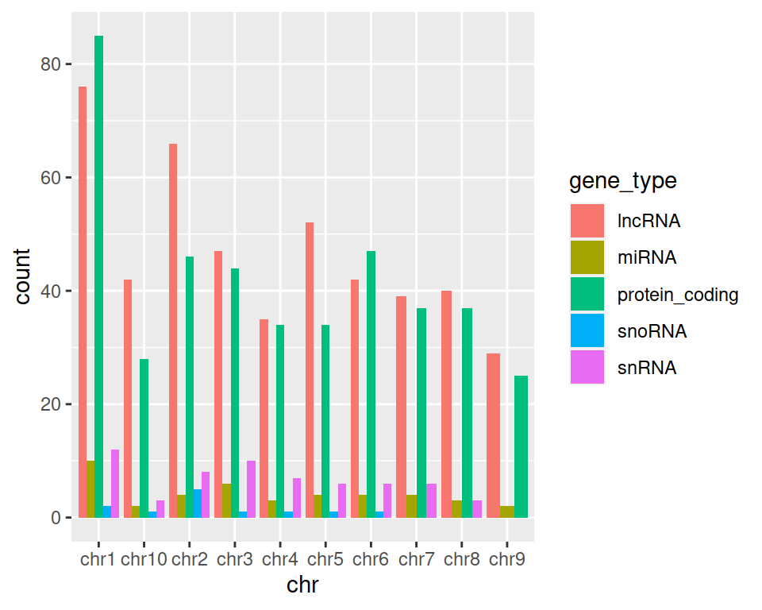
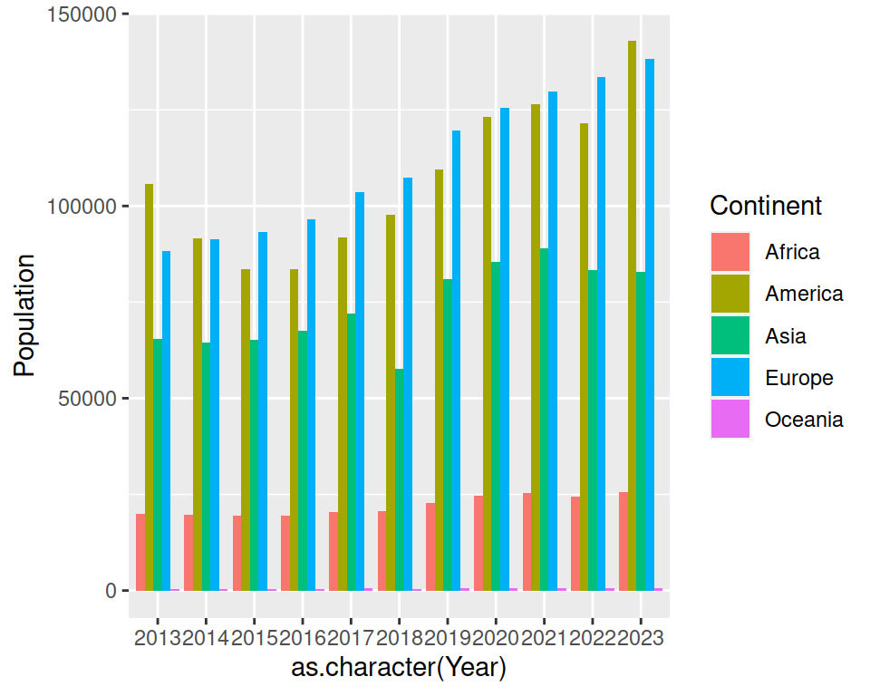
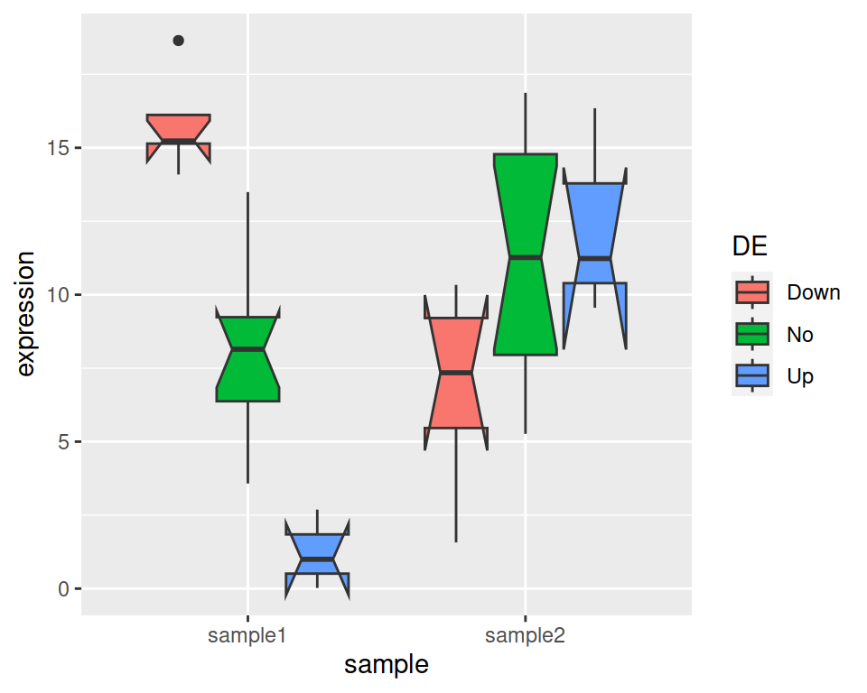
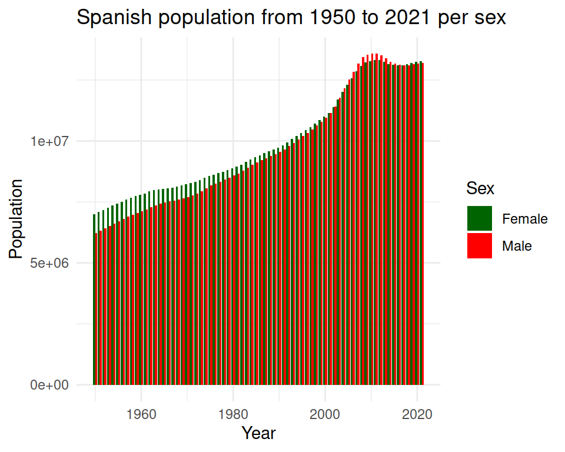

8.7 Exercise
- Import population_age_group_per_sex_long_format.csv into an object called pop_age.
correction
- Create a barplot that shows the number of people per Year:
- Split the view by Sex:
correction

- Select only “Spain” in “Country”:
correction
ggplot(data=pop_age %>% filter(Country=="Spain"), mapping=aes(x=Year, y=Population, fill=Sex)) +
geom_bar(stat="identity")
- Show the bars next to each other.
correction
ggplot(data=pop_age %>% filter(Country=="Spain"), mapping=aes(x=Year, y=Population, fill=Sex)) +
geom_bar(stat="identity", position="dodge")
- Change default colors using scale_fill_manual() layer.
The structure is not easy to remember: take a peek at the answer!
correction
ggplot(data=pop_age %>% filter(Country=="Spain"), mapping=aes(x=Year, y=Population, fill=Sex)) +
geom_bar(stat="identity", position="dodge") +
scale_fill_manual(values=c("darkgreen", "red"))
- Add a title, change the theme / background:
correction
ggplot(data=pop_age %>% filter(Country=="Spain"), mapping=aes(x=Year, y=Population, fill=Sex)) +
geom_bar(stat="identity", position="dodge") +
scale_fill_manual(values=c("darkgreen", "red")) +
ggtitle("Spanish population from 1950 to 2021 per sex") +
theme_minimal()
- Save to a PDF file: Export -> Save as PDF. Note: when saving to PDF format, you cannot manualy drag the plot to get the size and proportion you want, but you can Preview before saving it.